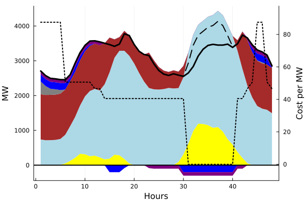

Model#
A minimal model that optimises the dispatch is presented here.
Dependencies#
JuMPfor handling optimisation problemsClpfor solving optimisation problemsPlotsfor plottingDataFramesfor storing data about components and time seriesCSVfor reading .csv files
Basic Structure#
The model includes generators and storage as well as a demand.
Component |
Description |
|---|---|
Generators |
Dispatchable: 1 coal power plant, 1 gas power plant |
Storage units |
1 Pumped Hydro, 1 Battery |
Mathematical model formulation#
The mathematical model formulation is as follows:
subject to:
Sets
Time steps T: \(t = {1, ..., 48}\)
Dispatchable generators (including storage units) Disp: \(disp = {\text{coal, gas, pumped hydro, battery}}\)
Non-dispatchable generators NonDisp : \(ndisp = {\text{pv, wind}}\)
Storage units S : \(s = {\text{pumped hydro, battery}}\)
Decision variables:
\(g_{disp, t} \geq 0\) is the generator dispatch of technology \(disp\) in time step \(t\)
\(cu_{t} \geq 0\) is the curtailment in time step \(t\)
\(d^{stor}_{s, t} \geq 0\) is the charging of storage \(s\) in time step \(t\)
\(l^{stor}_{s, t} \geq 0\) is the state of charge of storage \(s\) in time step \(t\)
Parameters:
\(MC_{disp}\) is the marginal generation cost of technology \(disp\)
RES availability
Installed capacity (generators and storage)
efficiency
Julia implementation#
For implementing the mathematical model into julia, JuMP is used. It is a modeling language for mathematical optimization embedded in Julia.
Before the optimisation problem can be formulated, the necessary input data needs to be loaded.
Preprocessing#
using JuMP
using Clp
using Plots
using DataFrames, CSV
data_path = "data"
time_series = CSV.read(joinpath(data_path, "timedata.csv"),DataFrame)
tech_data = CSV.read(joinpath(data_path, "technologies.csv"),DataFrame)
T = time_series[:,"hour"]
P = ["coal","gas","pv","wind"]
DISP = ["coal","gas"]
NONDISP = ["pv","wind"]
S = ["PumpedHydro", "Battery"]
DISP = vcat(DISP, S)
tech_data = DataFrames.unstack(tech_data, :technology, :parameter, :value)
demand = Dict(time_series[:,:hour] .=> time_series[:,:demand])
mc = Dict()
g_max = Dict()
eff = Dict()
stor_max = Dict()
for tech in tech_data.technology
mc[tech] = tech_data[tech_data.technology .== tech, :mc][1]
g_max[tech] = tech_data[tech_data.technology .== tech, :installed_cap][1]
eff[tech] = tech_data[tech_data.technology .== tech, :storage_eff][1]
stor_max[tech] = tech_data[tech_data.technology .== tech, :storage_max][1]
end
pv_installed = g_max["pv"]
wind_installed = g_max["wind"]
avail_pv = Dict(
("pv", row["hour"]) => row["pv"] * pv_installed for row in eachrow(time_series)
)
avail_wind = Dict(
("wind", row["hour"]) => row["wind"] * wind_installed for row in eachrow(time_series)
)
res_feed_in = merge(avail_pv, avail_wind)
next_hour(x) = x == T[end] ? T[1] : T[findfirst(isequal(x), T) + 1]
Modell formulation with JuMP#
The JuMP package is used to implement the mathematical model. First, a new JuMp model is initiated and a solver is chosen. Here, the open-source solver Clp is applied. Variables are created and added to the model. Subsequently, the objective function and the constraints are implemented. With the command optimize!(m) the model is solved.
m = Model(Clp.Optimizer)
@variables m begin
G[DISP, T] >= 0
CU[T] >= 0
D_stor[S,T] >= 0 # charging/demand from the battery
L_stor[S,T] >= 0
end
@objective(m, Min, sum(mc[disp] * G[disp,t] for disp in DISP, t in T))
@constraint(m, EnergyBalance[t=T],
sum(G[disp,t] for disp in DISP)
+ sum(res_feed_in[ndisp,t] for ndisp=NONDISP)
- sum(D_stor[s,t] for s in S)
- CU[t]
==
demand[t]
)
@constraint(m, MaxGeneration[disp=DISP, t=T],
G[disp,t] <= g_max[disp])
@constraint(m, MaxCharge[s=S, t=T],
D_stor[s,t] <= g_max[s])
@constraint(m, StorageLevel[s=S, t=T],
L_stor[s, next_hour(t)]
==
L_stor[s, t]
+ D_stor[s,t]
- (1/eff[s]) * G[s,t]
)
optimize!(m)
Results and plotting#
In the postprocessing part, the results of the model are extracted and plotted.
total_cost = objective_value(m)
result_G = value.(G).data
curtailment = value.(CU).data
feedin = [res_feed_in[ndisp,t] for ndisp in NONDISP, t in T]
generation = vcat(feedin, result_G) |> transpose
d = [demand[t] for t in T]
The results are used to plot the dispatch with the following code.
areaplot(
generation,
label=["PV" "Wind" "Coal" "Gas" "PumpedHydro" "Battery"],
color=[:yellow :lightblue :brown :grey :blue :purple],
xlabel="Hours",
ylabel="MW",
width=0,
legend=false
)
plot!(d, color=:black, width=3, label = "Demand")
plot!(curtailment .+ d, color=:black, width=2, label="Curtailment", linestyle=:dash)
stor = -value.(D_stor).data |> transpose
areaplot!(
stor,
label="",
color=[:blue :purple],
width=0
)
hline!([0], color=:black, width=2, label="")
price = dual.(EnergyBalance).data
plot!(
twinx(),
price,
color=:black,
ylim=(minimum(price)-10,maximum(price)+10),
width=2,
leg=false,
ylabel="Cost per MW",
linestyle=:dot
)
The code above yields this dispatch plot.
